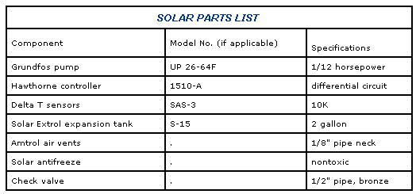

We featured plans for building a homemade solar water heater in MOTHER NO. 93; now we'll show you how to put it-or a similar commercially made model-to work.
Regardless of the season, the demand for hot water in many households invariably seems to outstrip the supply. And even though basic conservation measures do a lot to combat the problem, the energy consumed in heating water for baths, laundry, and dishes can be surprisingly expensive.
It's no wonder, then, that a number of homeowners have sought help from the sun to preheat the supply that enters their domestic water heaters. This method of temperature boosting is uncomplicated, relatively inexpensive, and easily adaptable to existing plumbing. So, since we explained how you can build a bargain-priced, commercialquality waterheating collector panel in last year's May/June issue (No. 93, page 146), we'll now describe how to put it, or its store-bought cousin, to use with a minimum of fuss.
Essentially, all you'll be doing is circulating solar-heated water through a continuous loop of plumbing that runs from the roof mounted panels down to a heat exchanger, through a pump, and back to the panels again. The heat exchanger is simply a tank-within-a-tank that transfers the approximately 140°F warmth of the loop water to the considerably cooler supply reservoir surrounding it.
Fittings tapped into that reservoir allow it to be placed in line between the well or city water source that feeds your house and the cold water inlet pipe to your electric or gas hot water heater.
Unfortunately, installation isn't quite that easy, since the pump must be regulated to keep it from operating when sunlight is not available. Therefore, the system must include a differential controller that utilizes sensors at the collectors and in the storage reservoir to govern the pump's operation. More sophisticated controllers incorporate features that deactivate the pump at preset upper and lower temperature limits and provide for freeze protection by intermittently circulating the closed-loop water or opening a drain-down valve. (A minimal-investment system could use a nontoxic antifreeze as a transfer fluid to achieve the same goal.)
Of course, for any installation to work, your site must be suitable for a solar application. Whether you plan on having a roof-or a wallmounted system, make sure that no obstructions-especially buildings or trees-will be in front of the collector panels. Remember that you'll be using hot water the whole year round, so in addition to sighting the morning-to-evening swing of the sun (the azimuth), check the solar altitude at the winter and summer solstices. (For more detailed guidelines, see the mini-manual in issue 96. In addition, an excellent reference source for this information is The Passive Solar Energy Book, by Edward Mazria . . . published by Rodale Press, 33 E. Minor St., Emmaus, PA 18049, and available at bookstores for $14.95.) And, while you're at it, make a quick check of your proposed plumbing path, looking specifically for obstacles such as ductwork, headers, wiring, or waterlines that could thwart your efforts to get the copper tubing from point A to point B.
Besides the solar collector panels (you'll probably want to use two 3' X 8' units for a family of four), you'll need a pump, a controller, the sensors, and an expansion tank, which is used to absorb the increase in volume of the closed-loop fluid when it's heated. The parts list below indicates those components we used in our system, and Solar Components Corporation, P.O. Box 237, Manchester, NH 03105, offers a full line of hardware in its catalog, which is available for $1.00 to those who write saying they got the address from this article.
In addition, you'll need an ample supply of 1/2" copper or polybutylene pipe, enough elbow fittings and couplers to complete your site-specific installation, ultraviolet-protected insulation jacketing for the exterior plumbing and an interior-grade equivalent, air vents for the highest points in the system (these can be purchased . . . or you can use simple condensers fabricated inexpensively with a 1/2" pipe T or cross to suit your plumbing plan, a 1/2" nipple, a 1/2"-to-1/8" pipe reducer bushing, and a 1/8" pipe plug), a check valve for the closed loop, a hose cock, and several shutoff valves. We'll assume that your existing plumbing is to code and already has a vacuum relief valve and a temperature-and-pressure relief valve installed if required.
Finally, you'll need two 8' and four 2' treated 2 X 4s, four 1/8" X 2" X 9" sections of angle iron, eight 1 /4" X 2" machine bolts, an equal number of 1/4" X 2" lag bolts, and eight 1/4" X 3-1/2" carriage bolts to complete the roof mounted collector racks.
Your choice of heat exchanger will depend largely upon how much you're willing to invest. In many professional installations, a combination heat exchanger and water heater is used as a single unit to replace the existing hot water tank. Because such a unit has intricate exchange coils, electric elements and thermostats, and a special lining, it costs about $500 . . . twice as much as a standard tank.
As an affordable-but admittedly less efficient-alternative, we adapted a scrapped 30-gallon gas water heater to serve as a separate exchanger for a total cost of about $12.
The gas-fired models, you see, have a central exhaust stack that runs right through the reservoir itself. So turning one into an acceptable heat exchanger involves nothing more than welding a 2" pipe coupling into each end of that stack (after you've removed the gas burner and controls), threading 2"-to1/2" pipe-reducer bushings into the openings, and installing 1/2"-pipe-to-sweat fittings into the bushings. The tank should come with a pressure relief valve (or a new one can be added if necessary), so it's ready to be safely used as a hot water storage reservoir, once it's plumbed in and wrapped with insulation.
Although the illustration included with this article shows how we set up our system, it's not necessarily representative of how you might put yours into service. Nonetheless, it'll provide anyone with basic guidelines for component location, routing, and panel mounting.
Study the circuit carefully and see how it might be adapted to your own site. Then, before you start cutting, consider a few points. First, the roof-mounted collector racks must be set to hold the panels at an "average" angle of incidence . . . one halfway between the sun's June and December extremes. So, for our area's 35° latitude, where the sun is about 50° above the horizon during the equinoxes in March and September, the collectors are fixed at a 40° angle from horizontal . . . or approximately 30° off the slightly pitched roof.
Second, bear in mind the possible consequences of penetrating the roof shingles and sheathing. If you'd rather not bore access holes for the collectors' supply and return pipes (or purchase special flashing for such installations), it may be just as easy to route the plumbing around the roof overhang and enter through the top of the siding. In any event, you'll want to treat those potential trouble points with silicone sealant.
Also, keep in mind that there's a limit to how high a pump can deliver fluid at an acceptable flow rate. Ours can circulate several gallons per minute at just over 20' of head, so a multistory installation from a basement might tax that particular model. Check the manufacturer's specifications before you buy.
Safety can't be ignored, either. Shut off the power or gas supply to your existing water heater before you turn of the water supply, and don't plug in the controller until you've finished wiring the circuit. Test your closed loop connections by filling the system and topping it off at the air vents before making the heat exchanger reservoir connection to your water heater. When the system's turned on, any leaks in the internal stack tube will eventually become apparent. After you've plumbed the exchanger reservoir in line with vour water heater tank and turned the water supply back on, you can safely reactivate your household water heater.
Finally, take the time to insulate your plumbing properly. Heat loss can be significant inside the structure as well as outside . . . especially at the exchanger reservoir, which has a large surface area.
We'll admit that this may not be the most sophisticated solar hot water system ever devised, but it certainly does represent a comfortable and affordable blend of commercial and home-grown technology . . . and that's part of what doing it yourself is all about!
|
STAFF PHOTOS [1] These solar collectors heat freeze protected water, which is cycled within a continuous circuit. [2](MIDDLE) The insulated heat exchanger tank transfers warmth from the closed loop to the hot water tank supply. [3] The differential controller. |
Graphic of the homemade water heating system. |
 Parts needed for this solar water heating installation project. |